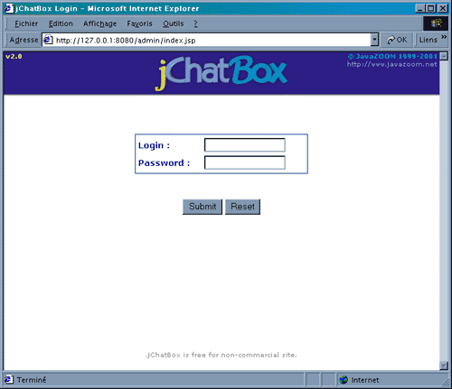
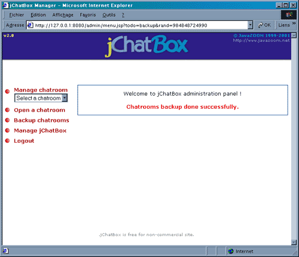
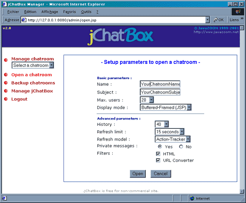
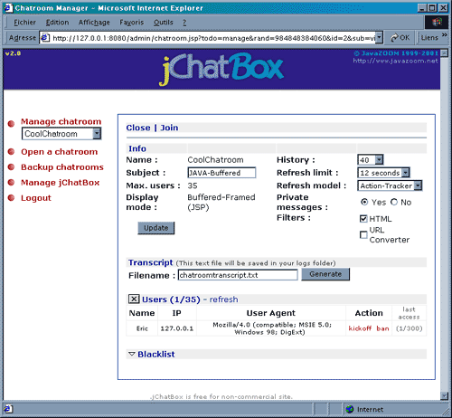
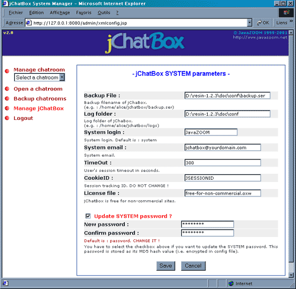

|
-
Administration Guide -
Once
you've installed and configured
jChatBox you can launch jChatBox and create/manager/monitor
chatrooms. You can also track user's sessions. Finally you
can modify jChatBox system properties.
Administration
GUI is login/password protected.
When you access http://yourserver.com/admin/index.jsp you
get the screen below. Default login is : system
and default password is : password.
You could change both in System properties.

-
Authentication page -
jChatBox
supports multiple chatrooms. You can open new chatroom
by following "open a chatroom"
link. You can manage a chatroom by selecting the chatroom
in the list box named "Manage
chatroom". You can backup all chatrooms by
following "Backup chatrooms"
link. See the screen below to locate these features.
Note that you can logout the administration
through the "Logout"
link. System properties page is available through "Manage
jChatBox" link.

-
Menu page -
You
need severals parameters (basics
and advanced) to open a new chatroom :
Name : The name of the chatroom.
Subject : The subject
of the chatroom.
Max. users. : Maximum
users for the chatroom. No more users allowed to enter in
the chatroom once this limit is reached.
Display Mode : There are
four way to display chatroom's content (i.e. chatooms clients).
It could be in an HTML/JavaScript page, an Applet, a Java
application or in a Macromedia Flash client. For now, only
HTML/JavaScript clients are implemented, so you have to choose
between Framed (JSP) or
Buffered-Framed (JSP)
modes. Buffered-Framed one is optimized to lower flickering
effect. "Framed" means that HTML/JavaScript clients
need frames.
History : It's the number of lines, from the chatroom's
content, that will be displayed on clients. It's a "window"
on the chatroom's content starting from the most recent message.
The more history value is high, the more you need bandwith.
One page is around 5 KB with history=40.
Refresh model : jChatBox uses a PULL system to keep
all clients synchonized. It means that each client asks for
the chatroom's content periodically. jChatBox provide three
model of "time-period" to refresh clients :
+
Time-Constant => Period
is constant
(in seconds).
+ RoomLoad => The more chatroom is loaded, the more its
clients are "refreshed".
+
Action-Tracker => The more an user chats, the more it is
"refreshed".
Refresh
limit : jChatBox is linked to refresh model one. Refresh
period can't be longer than this value.
Private message : This parameter allows system user
to enable/disable private message feature for the chatroom.
Filters : This parameter applies filters to the chatroom's
content.
+ HTML filter escapes "<"
and ">" characters to prevent from HTML tags
send by users. These tags could mess up the chatroom (i.e.
: javascript tag, images ...).
+ URL Converter filter
transforms - on the fly - user's messages including http://...,
ftp://..., mailto:..., news://.. into hyperlinks. It could
be useful for users. Note that links are always opened in
a new browser's window.
Much
more filters to come ...

-
Chatroom opening page -
Once
the chatroom is opened you can update some parameters : Subject,
History, Refresh Model, Refresh Limit,
Private Messages and Filters. The update occurs
in real time as soon as you click on "Update"
button.
You can generate a transcript (text file dump) of the chatroom
through the Transcript form. Fill in a transcript filename
and click on "Generate".
The text file will be stored in logs folder.
You can close the chatroom through "Close"
link. The whole chatroom will be lost.
You can join the chatroom by following "Join"
link. You will be logged as SYSTEM user so filters don't applies.
For Users and Blacklist features see Users
section.

-
Chatroom mangement page -
You
can list users through "Users"
link. You will learn about Name, IP Address,
User Agent (Netscape, Internet Explorer,...) and last
accessed time (in seconds) of any logged user.
You can also kickoff or ban any user. "kickoff"
means that the user will be kicked off the chatroom for a
few seconds only. He could join the chatroom again. "ban"
means that user's IP Address will be banned. He couldn't
join the chatroom with the same IP.
All banned users (IP) move to Blacklist.
You can clear the whole blacklist or only some IP address.
Note that only SYSTEM user knows about users' IP.
jChatBox identifies guest users (nickname), but it doesn't
provide authentication (login/password) yet.
You
can modify jChatBox system properties (jchatbox.xml) through
the administration GUI below. Once saved, modifications will
be taken into account on the next login.
Backup file : Backup filename of jChatBox. Chatrooms'
dump will be stored there.
Log
folder : Log folder of jChatBox. Log files will be stored
there.
System
login : SYSTEM login. Default is system.
You should modify it.
System
email : SYSTEM email.
TimeOut
: User's session timeout in seconds. (e.g.
if an user closes its browser then he will leave the chatroom
automatically after the TimeOut period).
CookieID : Session tracking ID. Do not modify it except
if session tracking fails.
License file : License filename. You have to modify
it if you purchase a license to use.
Update password : You should modify SYSTEM password.
Default is password. You
have to select the checkbox and fill in password forms twice
before submiting. Note this password is stored as its MD5
value (i.e. encrypted).

-
System properties page -
|